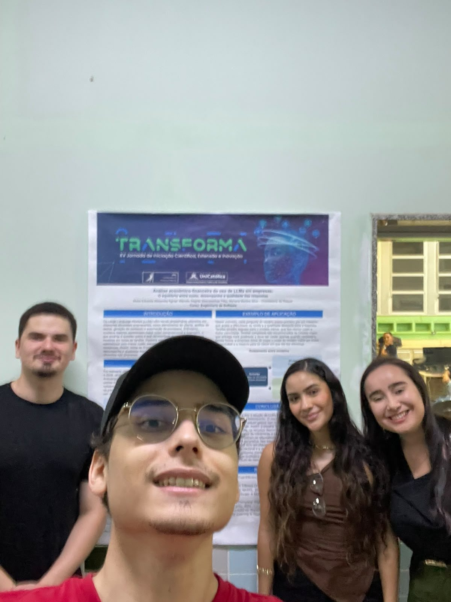
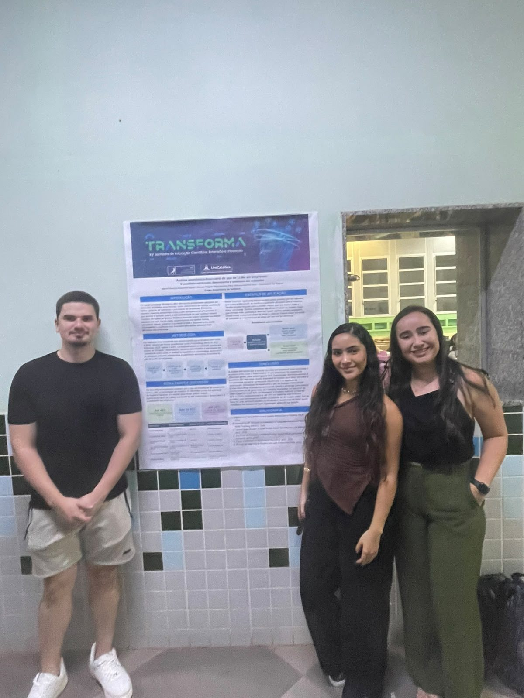
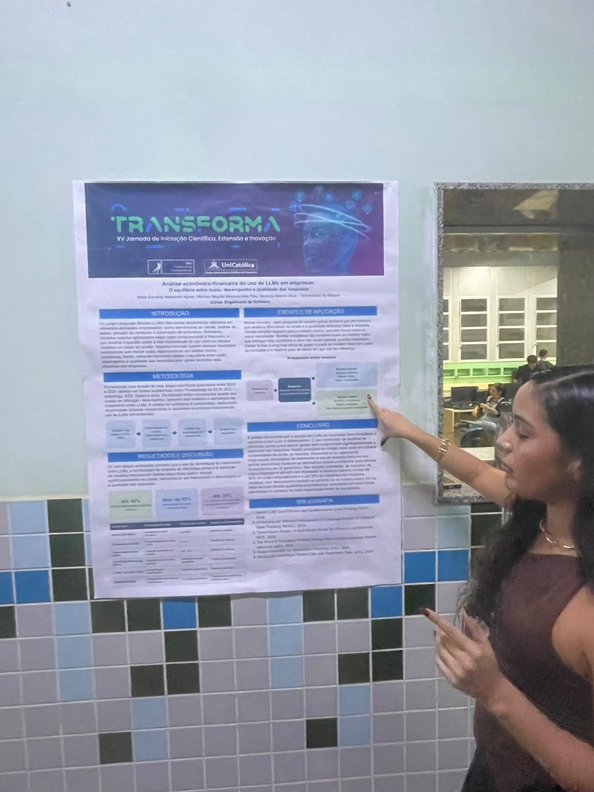
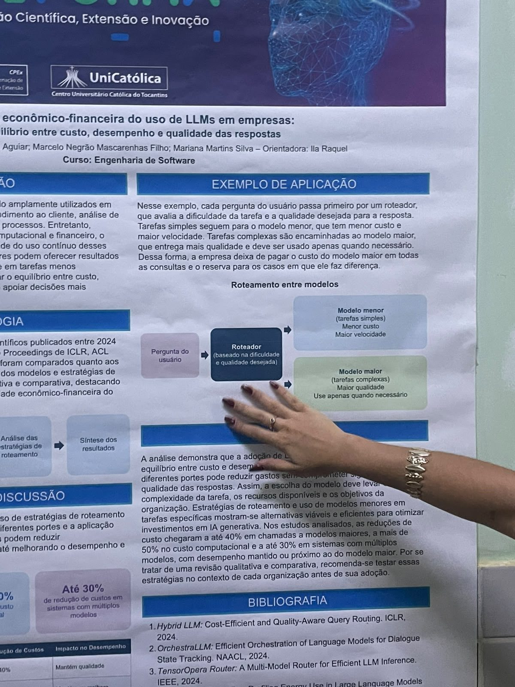

Nem toda pergunta precisa do modelo mais caro: estudo mostra como economizar com IA nas empresas
Revisão de seis artigos indica que escolher o modelo de linguagem certo para cada tarefa pode cortar custos sem perder qualidade nas respostas
Por Pedro Henrique Mendonça Passos · · UniCatólica – Centro Universitário Católico do Tocantins

Objetivo do projeto
O trabalho analisa como as empresas podem usar modelos de linguagem de grande porte (LLMs) de forma economicamente eficiente. A proposta é avaliar o equilíbrio entre o custo de processamento, a velocidade de resposta e a qualidade do conteúdo gerado pela inteligência artificial.
Com isso, os autores querem apoiar decisões mais eficientes sobre qual modelo usar em cada situação.
Problema a ser resolvido
Modelos maiores costumam dar respostas melhores em tarefas complexas, mas custam mais em processamento e em dinheiro. Só que muitas perguntas são simples e não precisam de um modelo tão avançado.
O estudo investiga estratégias para evitar gastos desnecessários sem comprometer o resultado entregue ao usuário, questão que pesa no orçamento de qualquer empresa que usa IA todos os dias.
Área de atuação
O tema se encaixa em Engenharia de Software, inteligência artificial aplicada, otimização de sistemas computacionais e gestão de custos de tecnologia. Os LLMs já aparecem no atendimento ao cliente, na análise de dados, na geração de conteúdo e na automação de processos, e por isso o custo de operação virou assunto de gestão.
Público-alvo
Esta leitura é interpretação do autor, não declaração da equipe. O público provável são empresas que usam IA em atendimento, análise de dados, geração de conteúdo e automação.
Também se beneficiam desenvolvedores, engenheiros de software e profissionais responsáveis por administrar sistemas de IA, que precisam entregar qualidade sem estourar o orçamento.
Possíveis partes interessadas
Gestores de empresas e responsáveis pelo orçamento de TI querem reduzir gastos. As equipes de tecnologia e os desenvolvedores de soluções com IA precisam implementar a estratégia de escolha de modelos.
Fornecedores de modelos de linguagem e pesquisadores da área também têm interesse, e os usuários finais esperam respostas rápidas e confiáveis.
Estado do mercado e concorrentes
Já existem serviços que fazem roteamento entre modelos de IA, a ideia central do cartaz. Entre as soluções semelhantes estão:
- OpenRouter: plataforma que reúne vários modelos de IA em uma única API e oferece roteamento entre eles.
- Not Diamond: serviço que escolhe, a cada pergunta, o modelo mais adequado em custo e qualidade.
- Martian: roteador de modelos voltado a reduzir custos mantendo a qualidade das respostas.
Diferencial
Os serviços acima são produtos comerciais; o cartaz é uma revisão científica. O diferencial do trabalho é reunir seis estudos de 2024 a 2026 e comparar as estratégias de roteamento, mostrando a lógica de forma didática.
No exemplo do cartaz, um roteador avalia a dificuldade da pergunta: tarefas simples vão para o modelo menor, e as complexas para o maior. A empresa deixa de pagar o modelo mais caro em todas as consultas.
Tecnologias
O cartaz não informa o desenvolvimento de um sistema próprio. A pesquisa é uma revisão qualitativa e comparativa de seis artigos, obtidos em fontes como Proceedings of ICLR, ACL Anthology, IEEE Xplore e arXiv.
As tecnologias estudadas são os próprios LLMs de diferentes portes e os roteadores que escolhem o modelo conforme a dificuldade e a qualidade desejada.
Análise crítica do autor
Pontos fortes
O tema é atual e responde a uma preocupação real das empresas. O cartaz tem boa organização visual, com fluxograma da metodologia, diagrama do roteador e os três números principais em destaque.
Pontos a melhorar
Por ser uma revisão qualitativa, os percentuais vêm de estudos diferentes e não são comparáveis diretamente. Não há teste próprio da equipe, e o cartaz mesmo recomenda validar as estratégias em cada organização.
Sugestão do autor para a equipe
Sugiro montar um pequeno experimento: enviar as mesmas perguntas a um modelo menor e a um maior, medir custo e qualidade e mostrar o resultado da própria equipe.
Equipe e autorização
Participaram do projeto:
- Maria Eduarda Alexandre Aguiar
- Marcelo Negrão Mascarenhas Filho
- Mariana Martins Silva
- Orientadora: Ila Raquel
A equipe autorizou a divulgação desta matéria e das fotos, conforme o link de autorização entregue no AVA.
Galeria de fotos



